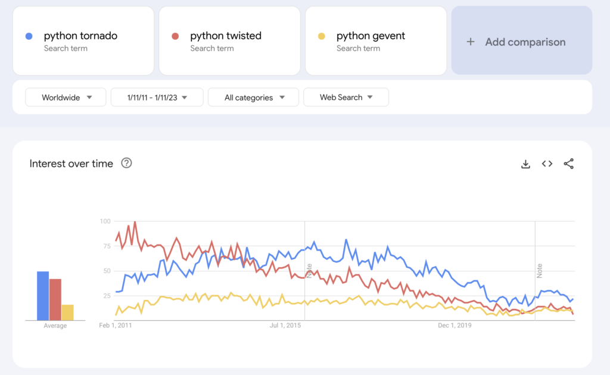

Python Asyncio Alternatives
We can use asyncio for asynchronous programming in Python, but we don't have to.
There are alternatives to asyncio. Some are old, widely used, and trusted, and others are new, interesting, and potentially a lot faster.
Asyncio is here to stay, but we can learn more about how it fits into the ecosystem by considering its alternatives. We consider both classical alternatives developed in a pre-asyncio world such as Twisted which dominated the landscape for so long, and modern alternatives to the asyncio module in the Python standard library.
In this tutorial, you will discover alternatives to asyncio in Python.
Let's get started.
Asyncio Alternatives
Asyncio provides asynchronous programming in Python via coroutines and the async/await language syntax.
It's powerful and widely used for web development applications, both on the client and server sides.
Nevertheless, it is not the only way to implement asynchronous programming and coroutines in Python.
There are alternatives to asyncio in the form of third-party libraries.
We can think of "asyncio" as perhaps three capabilities:
- Concurrency (coroutines, async/await, cooperative multitasking).
- Runtime and API (asyncio module API, event loop).
- Socket programming (protocols, streams, subprocesses, etc. the application domain).
Alternatives to asyncio may offer some or all of these features.
For example, older alternatives developed before asyncio was added to the Python language and standard library offered all aspects. More recent alternatives leverage coroutine-based concurrency in the language and provide new APIs. All are focused on socket programming broadly, or narrowly in the case of web servers.
An area of confusion is "asynchronous programming" and "event-driven programming". Historically, the terms have been used interchangeably. Typically asynchronous offers concurrency (e.g. threads or coroutines) and event-driven is single-threaded, although this distinction breaks down quickly in real APIs and applications.
To approach the question of asyncio alternatives, can divide the alternate libraries into two main groups:
- Classical Alternatives (before asyncio)
- Modern Alternatives (complement or replace)
Let's take a closer look at each group.
Classical Alternatives
These are projects and libraries that existed before asyncio was developed and added to the Python standard library.
They offer asynchronous programming (e.g. Tornado), coroutines (e.g. Gevent), or both, and in some cases (e.g. Twisted) inspired elements of the asyncio API.
These classical approaches are mostly event-driven programming (reactor pattern) and are implemented with callbacks or primordial coroutines.
- Tornado: Tornado is a Python web framework and asynchronous networking library, originally developed at FriendFeed.
- Twisted: Event-driven networking engine written in Python.
- Gevent: Coroutine-based concurrency library for Python
Modern Alternatives
These projects and libraries were developed alongside or after asyncio was added to the Python standard library.
They can be used to enhance asyncio (e.g. uvloop and anyio) or used instead of asyncio (e.g. curio and trio).
These modern approaches came to life in a post-asyncio world and leverage coroutines directly in the Python language.
- Curio: Good Curio!
- Trio: Trio – a friendly Python library for async concurrency and I/O
- AnyIO: High level asynchronous concurrency and networking framework that works on top of either trio or asyncio
- UVloop: Ultra fast asyncio event loop.
The focus of these modern alternatives is alternatives to the asyncio module API (e.g. Curio, Trio, AnyIO) and alternatives to the asyncio module event loop implementation (Uvloop).
We are stopping short of ASGI web servers and frameworks built on top of servers. We're also stopping short of async client libraries.
Did I miss an important alternative? If so, please let me know in the comments below.
Relative Interest in Alternatives
All of these projects are hosted on GitHub (some predate GitHub and moved over). As such, we can take the GitHub star rating as a proxy for relative interest in these libraries.
The plots below compare the star histories for the libraries.
Tornado is an old and important project (development started circa 2002) and the star ratings reflect this. We can see the popularity of twisted and gevent and the dramatic rise of uvloop.
Another way we can think about interest in these libraries is in google search demand, via google trends.
The plot below compares the search interest in the three more popular classical libraries: tornado, twisted, and gevent from 2011 to the present (about 12 years).
We can see a solid background interest in gevent, a declining interest in twisted, and a growth and decline in interest in tornado. I would not put too much stock in this plot though, I suspect the data is noisy.

A similar plot for the newer libraries is not really possible, there is not enough demand and the resulting plot is unreadable.
Alternative Asyncio Libraries
Now that we have some idea about alternatives to asyncio, let's take a closer look at each in turn.
Specifically, we will try to understand what each project offers or aims to achieve and look at a concrete hello world example.
Let's dive in.
Tornado
Tornado is a network programming library and web framework.
It uses an asynchronous programming model and supports non-blocking I/O.
Tornado is a Python web framework and asynchronous networking library, originally developed at FriendFeed. By using non-blocking network I/O, Tornado can scale to tens of thousands of open connections, making it ideal for long polling, WebSockets, and other applications that require a long-lived connection to each user.
-- tornado, GitHub Project.
It is an old project (2009), originally developed for FriendFeed which became a part of FaceBook (2009).
As such, it pre-dates the WSGI standard for Python web servers and the more modern ASGI standard for asynchronous Python web servers.
Tornado is different from most Python web frameworks. It is not based on WSGI, and it is typically run with only one thread per process.
-- Tornado Documentation
Modern Tornado works with asyncio in the standard library.
It originally supported its own implementation of coroutines (decorated coroutines), although now supports coroutines provided in modern Python via the "async def" and "await" expressions (native coroutines).
Tornado is integrated with the standard library asyncio module and shares the same event loop (by default since Tornado 5.0). In general, libraries designed for use with asyncio can be mixed freely with Tornado.
-- Tornado Documentation
Tornado can be installed with your preferred package manager, such as pip.
For example:
pip install tornadoWe can develop a hello world Tornado program.
This program is copied directly from the README from the GitHub project.
It defines a new web application that has one handler. The handler returns the text "Hello, world". The server listens on port 8888.
We can see the definition of coroutines using the "async def" expression and the awaiting of coroutines via the "await" expression. We can also see that the server is run like a regular asyncio program via the asyncio.run() function that starts an event loop in the standard library and runs the main() coroutine object.
In this way, a tornado server is a regular asyncio program.
The complete example is listed below.
# SuperFastPython.com
# hello world for tornado
import asyncio
import tornado
class MainHandler(tornado.web.RequestHandler):
def get(self):
self.write("Hello, world")
def make_app():
return tornado.web.Application([
(r"/", MainHandler),
])
async def main():
app = make_app()
app.listen(8888)
await asyncio.Event().wait()
if __name__ == "__main__":
asyncio.run(main())
We can then connect to the server using a web browser, for example:
http://localhost:888The browser reports the text "Hello, world".
Tornado helped usher in the era of asynchronous programming in Python for web development. It predated the development of asyncio and the modern ASGI standard and may not be preferred given lower performance than some modern approaches like the FastAPI ecosystem.
Next, let's take a look at the twisted project.
Twisted
Twisted is also a network programming library.
It offers a web server, but this is not the main focus, as it offers an implementation for a suite of protocols and tools for developing custom application protocols.
Twisted makes it easy to implement custom network applications.
-- Twisted Homepage
It uses an event-driven model with the reactor pattern (event loop).
Twisted is an event-based framework for internet applications, supporting Python 3.6+. It includes modules for many different purposes ...
-- Twisted, GitHub Project.
Central to Twisted is the ideal of asynchronous programming via callback functions, e.g. "callback-based programming".
The callback approach to programming can be frustrating, and in large systems the difficulty in tracing execution is referred to as "callback hell".
The situation where callbacks are nested within other callbacks several levels deep, potentially making it difficult to understand and maintain the code.
-- callback hell, Wiktionary.
Twisted is also an older library, developed initially in 2002.
As such, it is a trailblazer, defining "asynchronous programming" in Python long before it became popular and long before it became a standard for modern web development.
It inspired many frameworks that came after. The asyncio project, before it was integrated into the standard library, directly calls out Twisted as an inspiration for its transport and protocol abstractions.
Here is a more detailed list of the package contents: [...] transport and protocol abstractions (similar to those in Twisted);
-- Asyncio Wiki Home, Python Asyncio Project
Asynchronous programming is achieved using events and callback functions. The focus is on defining and developing application protocols.
Given its age and approach, it does not collaborate with modern asyncio in the standard library.
Twisted was the only way to approach network programming with asynchronous programming in Python for a long time. As such many popular platforms and applications used it over the years on the client and server side.
We can install Twisted using our favorite package manager such as pip.
For example:
pip install twistedOnce installed, we can develop a hello world example.
In this case, we can define a simple echo server that reads text and responds with the same text.
This example is taken directly from the Twisted homepage.
We can see that the program is defined in terms of Factory and Protocol classes and a reactor (event runtime) is started to handle incoming TCP socket connections on port 1234.
It does not define coroutines or make use of asyncio expressions.
The complete example is listed below.
# SuperFastPython.com
# hello world for twisted
from twisted.internet import protocol, reactor, endpoints
class Echo(protocol.Protocol):
def dataReceived(self, data):
self.transport.write(data)
class EchoFactory(protocol.Factory):
def buildProtocol(self, addr):
return Echo()
endpoints.serverFromString(reactor, "tcp:1234").listen(EchoFactory())
reactor.run()
We can then run the program.
From a new command line, we can connect to the server using the telnet program.
For example:
telnet localhost 1234Sending text to the server causes it to be echoed back immediately.
test
test
hello world
hello worldGevent
Gevent is a network programming library.
It uses an event-driven model for asynchronous programming, like Twisted. In this case, it is built on top of efficient C-libraries for event-driven programming, such as libev or libuv, the latter of which is the basis for Node.js, the popular JavaScript framework.
gevent is a coroutine-based Python networking library that uses greenlet to provide a high-level synchronous API on top of the libev or libuv event loop.
-- gevent Homepage
Like Twisted, it provides implementations of many network programming protocols and supports the development of custom application protocols for socket programming.
Unlike Twisted, the focus is on asynchronous programming using coroutines called Greenlets.
The greenlets all run in the same OS thread and are scheduled cooperatively. This means that until a particular greenlet gives up control
-- Gevent Homepage
Gevent is built on top of the Greenlet library that offers cooperative multitasking with coroutines, long before coroutines were offered in asyncio
https://github.com/python-greenlet/greenlet
Greenlets are lightweight coroutines for in-process concurrent programming.
-- Greenlet GitHub Project.
Note, Eventlet is another event-based network programming library built on top of Greenlet, although it has not seen the same level of adoption as Gevent.
Eventlet is a concurrent networking library for Python that allows you to change how you run your code, not how you write it. It uses epoll or libevent for highly scalable non-blocking I/O. Coroutines ensure that the developer uses a blocking style of programming that is similar to threading, but provide the benefits of non-blocking I/O.
-- Eventlet, GitHub Project.
Importantly, Gevent brings three elements seen in modern asyncio together, asynchronous programming (via an event model), non-blocking network I/O (application domain), and coroutines (Greenlets).
Both Twisted and Gevent are somewhat contemporaries and although Twisted was faster and perhaps more powerful, Gevent was often preferred because its use of coroutines instead of callbacks made the code easier to develop and maintain. At least in some cases, perhaps large applications.
We can install gevent using our preferred Python package manager, such as pip.
For example:
pip install geventWe can then develop a Gevent hello world program, in this case taken directly from the Gevent Developer Tutorial.
The example defines two Greenlets (coroutines) that both report messages and suspend execution. Both coroutines are run at the same time and the program blocks until all tasks are done.
We can see that coroutines are defined as regular Python functions and that cooperation is achieved via the gevent library.
The complete example is listed below.
# SuperFastPython.com
# hello world for gevent
import gevent
def foo():
print('Running in foo')
gevent.sleep(0)
print('Explicit context switch to foo again')
def bar():
print('Explicit context to bar')
gevent.sleep(0)
print('Implicit context switch back to bar')
gevent.joinall([
gevent.spawn(foo),
gevent.spawn(bar),
])
Running the example runs both Greenlets and reports the message, showing how execution is suspended as the coroutines suspend and resume.
Running in foo
Explicit context to bar
Explicit context switch to foo again
Implicit context switch back to barCurio
Curio is an alternative implementation of asyncio, specifically the asyncio module API.
It offers asynchronous programming, coroutines and non-blocking socket programming, although was developed independently and contemporarily with asyncio.
Curio is a coroutine-based library for concurrent Python systems programming using async/await. It provides standard programming abstractions such as tasks, sockets, files, locks, and queues as well as some advanced features such as support for structured concurrency. It works on Unix and Windows and has zero dependencies. You'll find it to be familiar, small, fast, and fun.
-- curio, Github Project.
At the time of writing, development has definitely stopped. A line has been drawn under the project. I guess we can take it as a research project, the basis for study and learning.
The Curio project is no longer making package releases. I'm more than happy to accept bug reports and may continue to work on it from time to time as the mood strikes.
-- curio, Github Project.
Importantly, it provides a modern alternate way to implement the capabilities of asyncio. It shows another way and is completely independent.
Q: Is Curio implemented using asyncio?
A: No. Curio is a standalone library directly created from low-level I/O primitives.Q: Is Curio meant to be a clone of asyncio?
-- curio, Github Project.
A: No. Although Curio provides a significant amount of overlapping functionality, the API is different. Compatibility with other libraries is not a goal.
It makes use of asyncio expressions in Python, specifically "async def" for defining coroutines and "await" expressions for suspending execution.
We can install Curio using our preferred Python package manager, such as pip.
For example:
pip install curioWe can then develop a hello world example, in this case taken directly from the README in the GitHub project.
The example defines an echo client and server and runs the server on port 25,000.
We can see that coroutines are defined using "async def" and awaited directly. We can also see use of "async with" expressions.
Importantly, we can see that the asyncio module is not used, in favor of the curio module.
The complete example is listed below.
# SuperFastPython.com
# hello world for curio
from curio import run, spawn
from curio.socket import *
async def echo_server(address):
sock = socket(AF_INET, SOCK_STREAM)
sock.setsockopt(SOL_SOCKET, SO_REUSEADDR, 1)
sock.bind(address)
sock.listen(5)
print('Server listening at', address)
async with sock:
while True:
client, addr = await sock.accept()
await spawn(echo_client, client, addr, daemon=True)
async def echo_client(client, addr):
print('Connection from', addr)
async with client:
while True:
data = await client.recv(100000)
if not data:
break
await client.sendall(data)
print('Connection closed')
if __name__ == '__main__':
run(echo_server, ('',25000))
Running the example executes the server and listens for a client connection.
We can connect to the server using the telnet program.
For example:
telnet localhost 25000The connection is reported by the server program.
Server listening at ('', 25000)
Connection from ('127.0.0.1', 56088)We can then send text to the server, which is echoed back.
test
test
hello world
hello worldThe example looks much like an asyncio equivalent, although perhaps with more boilerplate compared to the asyncio.Server instance and asyncio.StreamWriter and asyncio.StreamReader objects.
Trio
Trio is an alternative implementation of the asyncio module API.
The Trio project aims to produce a production-quality, permissively licensed, async/await-native I/O library for Python. Like all async libraries, its main purpose is to help you write programs that do multiple things at the same time with parallelized I/O.
-- Trio GitHub Project
In this way, Trio is a lot like Curio. In fact, it is an extension of Curio, or "modern" Curio.
The claimed benefit is that it is simpler than asyncio.
Trio was built from the ground up to take advantage of the latest Python features, and draws inspiration from many sources, in particular Dave Beazley's Curio. The resulting design is radically simpler than older competitors like asyncio and Twisted, yet just as capable.
-- Trio GitHub Project
Like Curio, the asyncio expressions in Python are used to create and run Python coroutines, and the library provides the tools for developing and running asynchronous programs for network programming.
As such, we cannot mix asyncio and trio modules.
You might wonder whether you can mix-and-match primitives from different async libraries. For example, could we use trio.run() together with asyncio.sleep()? The answer is no, we can't...
-- Trio Tutorial
We can install Trio using our preferred Python package manager, such as pip.
For example:
pip install trioOnce installed, we can develop a Trio hello world example.
This is similar to the asyncio hello world example.
We can define a new coroutine that reports a message, suspends with a sleep for one second, then resumes and reports a second message.
The coroutine is defined and created as per normal, although run in this case using the Trio event loop.
The complete example is listed below.
# SuperFastPython.com
# hello world for trio
import trio
async def main():
print('Hello')
await trio.sleep(1)
print('World')
trio.run(main)
Running the example creates the coroutine and runs it using the Trio run time.
The messages are then reported.
Hello
WorldWe can see that Trio provides yet another way to implement asynchronous programming using coroutines provided in the base Python language.
AnyIO
AnyIO provides a unified API for asynchronous programming in Python.
It is designed to be a wrapper around the Asyncio API (in the standard library) and the Trio API, and presumably other async APIs that may be developed.
AnyIO is an asynchronous networking and concurrency library that works on top of either asyncio or trio. It implements trio-like structured concurrency (SC) on top of asyncio and works in harmony with the native SC of trio itself.
-- AnyIO GitHub Project.
It used to support Curio as well, although support for Curio was intentionally dropped.
The maintainer specifically requested Curio support to be removed from AnyIO
-- AnyIO Frequently Asked Questions
It allows a program to be developed using AnyIO and then interchangeably switch out Trio and Asyncio, and potentially future async libraries.
AnyIO lets you mix and match code written for AnyIO and code written for the asynchronous framework of your choice. There are a few rules to keep in mind however: You can only use “native” libraries for the backend you're running, so you cannot, for example, use a library written for Trio together with a library written for asyncio. ...
-- AnyIO Documentation.
It's a fascinating idea, and reminds me of Keras for deep learning that allows you to switch out TensorFlow and PyTorch.
We can install AnyIO using our preferred Python package manager, such as pip.
For example:
pip install anyioOnce installed, we can develop a hello world program.
In this case, we can define a new coroutine that reports a message, sleeps, and reports a second message.
This is the classic asyncio hello world program.
The complete example is listed below.
# SuperFastPython.com
# hello world for anyio
import anyio
# main coroutine
async def main():
print('Hello')
await anyio.sleep(1)
print('World')
# start the event loop
anyio.run(main)
Running the example creates the coroutine and runs it using AnyIO.
By default, AnyIO will use the asyncio event loop from the Python standard library (e.g. the asyncio module).
The message is reported, and the coroutine suspends, resumes, and reports a final message.
Hello, world!This is an interesting project if you require separation of the application from the underlying asyncio API.
Uvloop
Uvloop is a drop-in replacement event loop for asyncio.
The claimed benefit of Uvloop is that it is fast, faster than the event loop provided in the standard library.
uvloop is a fast, drop-in replacement of the built-in asyncio event loop. uvloop is implemented in Cython and uses libuv under the hood.
-- uvloop GitHub Project.
The project homepage supports speed claims with impressive graphs showing asyncio and uvloop relative performance with different communication mechanisms and data sizes, which are convincing.
We can assume that the speed benefit comes because of a different set of trade-offs chosen in the design.
uvloop makes asyncio fast. In fact, it is at least 2x faster than nodejs, gevent, as well as any other Python asynchronous framework. The performance of uvloop-based asyncio is close to that of Go programs.
-- uvloop Documentation.
The speed of Uvloop makes it popular.
It is the basis of an ASGI-compatible Python web server called Uvicorn.
Uvicorn is an ASGI web server implementation for Python.
-- Uvicorn, GitHub Project.
In turn, FastAPI, a fast-growing and widely adopted Python Web Framework uses (or can use) Uvicorn.
We can install uvloop using our preferred Python package manager, such as pip.
For example:
pip install uvloopOnce installed, we can develop our familiar hello world program.
We can see that the coroutine is defined as per normal and that we can use the asyncio module API.
The only difference in this and most use cases is a change in how the asyncio program is started and run.
In this case, we use Uvloop instead of asyncio to start and run the event loop with our main() coroutine.
The complete example is listed below.
# SuperFastPython.com
# hello world for uvloop
import uvloop
import asyncio
async def main():
print('Hello')
await asyncio.sleep(1)
print('World')
uvloop.run(main())
Running the example creates the coroutine and runs it using the Uvloop.
The message is reported, and the coroutine suspends, resumes, and reports a final message.
Hello
WorldThe example highlights that as suggested in the documentation, Uvloop can be dropped and used, perhaps with a single line change. Offering the speed benefits without any need to change the asyncio API calls in the application.
Choosing An Asyncio Alternative
(these are just my opinions - weakly held, take them or leave them, no need for war)
I'd recommend using asyncio provided in the standard language.
Coroutines are built into the Python language and the asyncio module is provided in the standard library.
It is mature, widely adopted, and supported.
Every new library we add to a project is a cost and debt. Think really hard before you add one more brick to the stack.
The more a system relies on exotic pieces, the more intimidating it will be for someone trying to understand it for the first time. Try to give the whole system a familiar feeling by using standardized, common approaches.
-- Page 81, Code Complete (2nd Edition), Steve Mcconnell, 2004.
Adding a drop-in replacement for the event loop is cool. Do it if it makes sense, especially if speed is an issue.
The classical pre-asyncio projects will remain important.
- There are mountains of legacy systems that use them that need to be maintained.
- There are hundreds of thousands of man-hours already invested in learning and using them.
The classical platforms will continue to be used in legacy projects and by legacy developers/organizations that seek to leverage sunk costs. They're good. They're mature. They work. Fair arguments here. Don't rewrite with the new hotness.
Greenfields web development should probably be taking a hard look at asyncio-based ASGI web servers. We didn't get into web servers in this tutorial, but picking a server built on the modern asyncio stack is important now or shortly will be as stacks codify. Similarly, network programming/socket programming should also be taking a hard look at using asyncio-based stacks.
Personally, I'd stay away from Curio/Trio/AnyIO. They're cool, fun for learning, but asyncio is already hard enough without having to study and learn modestly adopted alternatives. Trio is the leader of the pack for now, and probably not seeing wide enough adoption (yet).
Takeaways
You now know about alternative libraries to asyncio in Python.